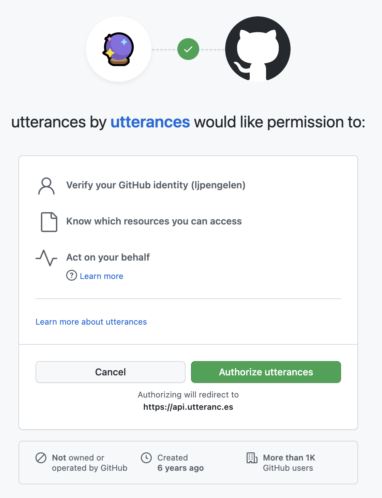

This page demonstrates Tiny Utterances, a minimalistic alternative to utterances. Utterances is a comment system powered by Github Issues, and so is Tiny Utterances. It uses GitHub's REST API to fetch the comments on an issue of your choice and displays them on your webpage. You can see it in action at the bottom of this page.
I think the idea behind utterances is brilliant. However, there are two reasons why I decided to look for something else. First, utterances doesn't seem to be actively developed anymore. It could be that it's mostly "done", so this in itself is not the most compelling reason to dismiss it. Second, and most importantly, I didn't feel good about the permissions it requests.
Utterances needs to be able to comment on issues on my behalf and read comments on issues. However, I can't tell from the permissions screen above what actions I'm allowing it to perform in my name. I don't know who's to blame for this. Maybe it's not possible to request fine-grained permissions. Maybe utterances only requests the permissions I just mentioned, but GitHub's permissions screen is not detailed enough to reflect that. Either way, I didn't feel good about this, and I didn't want to dive into its source code to see what exactly was going on.
Giscus is a comment system powered by Github Discussions. It is inspired by utterances. The permissions it requests are again the reason for me to look elsewhere.

There are quite a few comments systems. Some of them are paid, and I'd like to avoid spending money. Some of them set the type of cookies that require me to put up a cookie banner, which I'd like to avoid. Some of them require hosting, which I'd also like to avoid. Some of them have dubious reputations when it comes to respecting privacy, which I don't like.
Using Tiny Utterances requires the following things:
<div class="tiny-utterances"
data-repo-owner="REPOSITORY_OWNER"
data-repo-name="REPOSITORY_NAME"
data-issue-number="ISSUE_NUMBER"
data-max-comments="10"
<a class="tu-button"
href="https://github.com/REPOSITORY_OWNER/REPOSITORY_NAME/issues/ISSUE_NUMBER">
Discuss this page on Github
</a>
</div>That's all you need to get started. After performing these steps, you'll have a comment section like the one below.